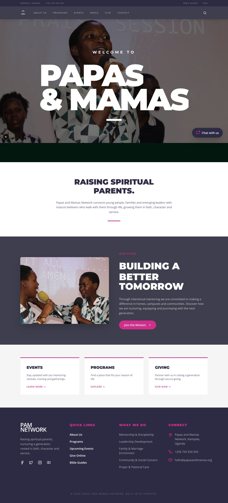
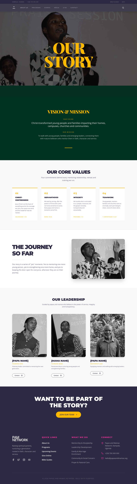
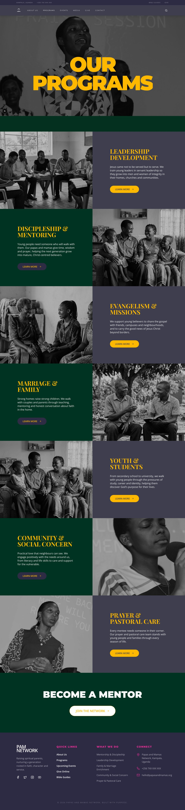
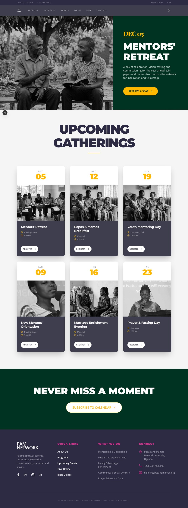
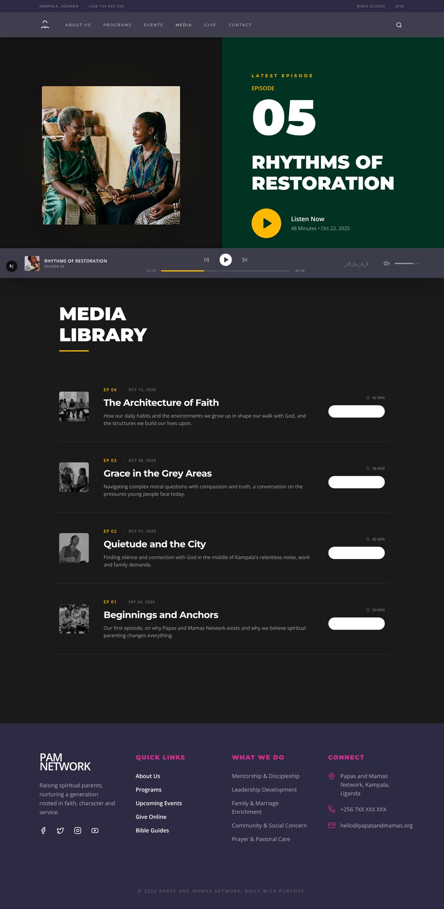
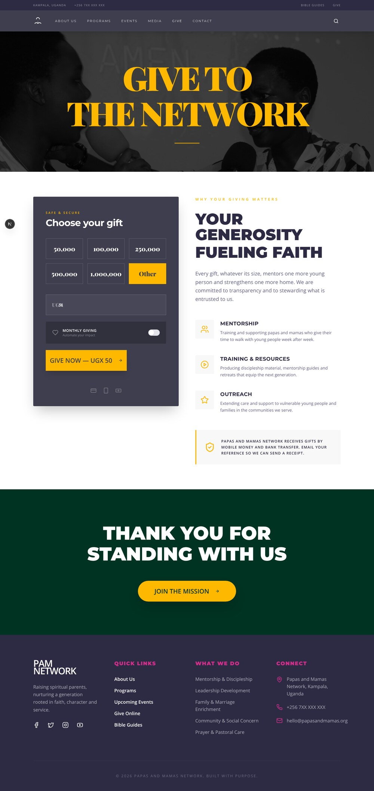
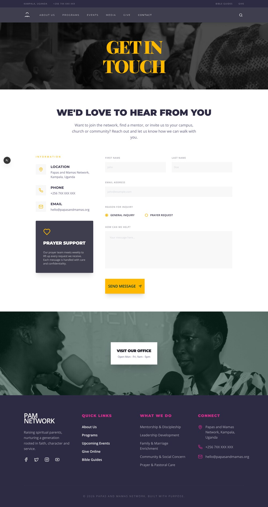
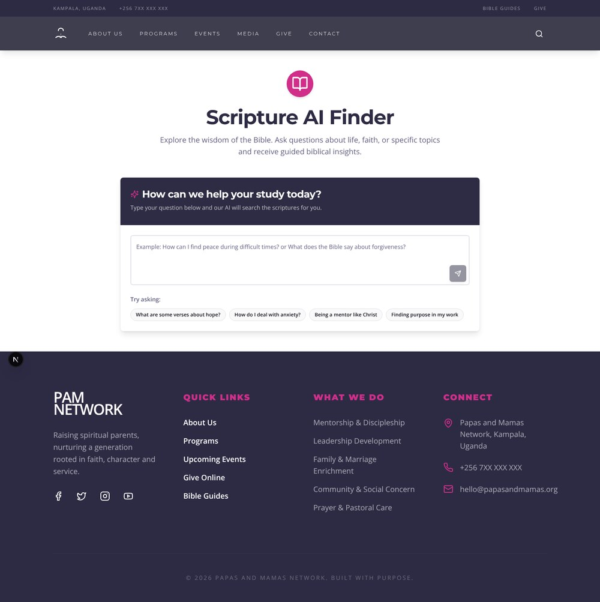

The design now leans toward FOCUS Uganda's deep green, and every grey placeholder is gone — replaced with real photographs plus new original imagery for mentoring, family and youth.
Captured in a real browser at 1440px. Fonts are served locally (the sandbox has no internet), so Montserrat / Playfair Display / Open Sans render exactly as they do live. Every photograph now loads from public/ — nothing is fetched from an external service any more.







